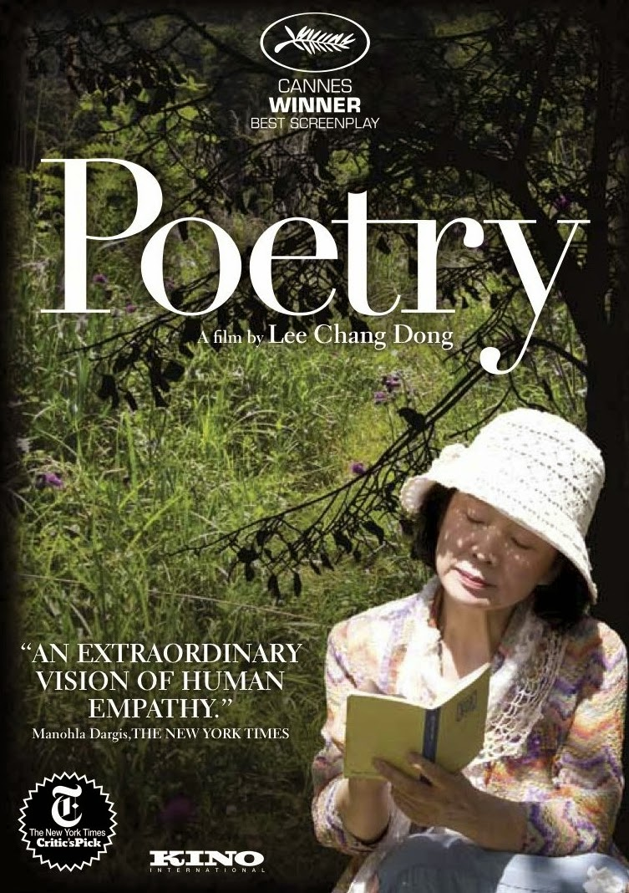
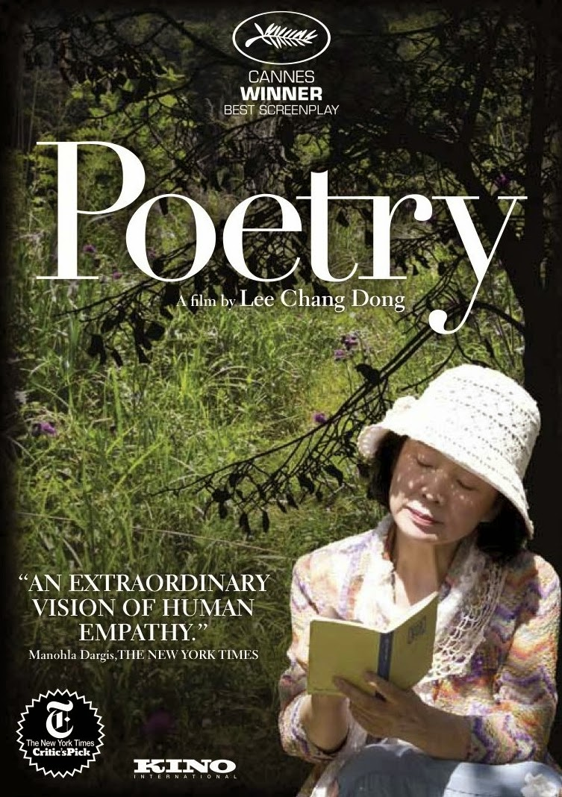

Poetry
Lee Chang-dong
The movie opens on a river scene with children playing on the bank. The body of a girl in a school uniform floats by.
Yang Mi-ja, a 66-year-old grandmother, consults a doctor at a hospital who is concerned about her forgetfulness, referring her to a specialist. As she leaves the hospital she sees a woman crazy with grief because her 16-year-old daughter has drowned.
Though Mi-ja lives on government welfare, she has a small job taking care of a well-to-do elderly man who has had a stroke. At home, she cares for her ill-mannered 16-year-old grandson, Jong-wook (Lee David), whose divorced mother lives in Busan. When Mi-ja asks Wook about the girl from his class who drowned, Wook insists that he doesn't know her.
When Mi-ja notices a poster advertising a poetry class at a local community center, she decides to enroll. The course assignment is to write one poem by the end of the month-long course. At the suggestion of her teacher, she begins writing notes about the things she sees, especially flowers.
The Korean version